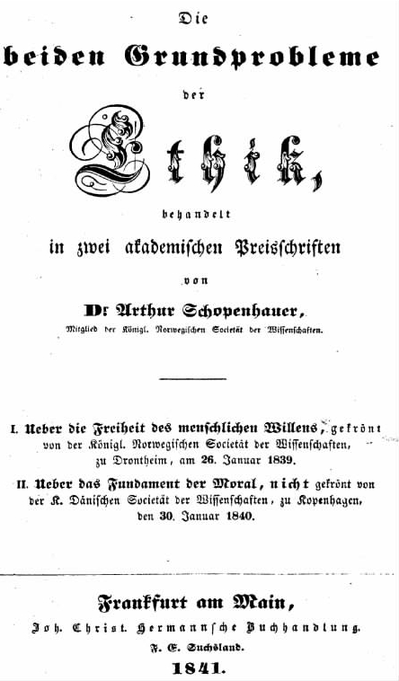

在叔本华看来，伦理学与美学这两个领域有着相似性：规定性法则以及一般的概念性思想都不是本质的东西：
这意味着人们要么具备本能的伦理洞察力，要么不具备这种能力；我们知道叔本华认为一个人的基本性格是无法改变的。既然如此，道德规范就仅在引导和约束人们的行为方面有用：你可以训导一个自私自利的人，以减少他或她的行为的灾难性后果，却不能把他或她变成一个好人。由于叔本华秉持这种观点，他的哲学伦理学本身就不会是规定性的。这样的伦理学也不会试图争辩道德律是否具有普遍约束力，或考虑人们为何必须服从它们，也根本不会提出有关“道德律”的理论。
叔本华的伦理学理论与他的知识理论或美学一样，并非完全处于康德的阴影之下，但阴影却始终存在。康德的伦理学是关于义务的伦理学，它试图为具有完美理性的个体制订一套必须服从的行为准则。与之相反，叔本华的伦理学是关于同情的伦理学。它试图用个体在对待彼此的态度以及对待整个世界的态度上的分歧来解释善与恶的区别。对叔本华而言，道德无关义务或“应该”；也不能建立在理性基础上。用维特根斯坦晚期的话来说，它是有关“正确看待世界”的问题。但是为了证明这种观点，叔本华首先必须和康德进行一番较详细的辩论。
在《论道德的基础》一文中，叔本华对康德伦理学作了简明而雄辩的讨论，提出了许多异议，主要的一条是康德关于“你应该”的行为准则是一个伪装下的神学概念。康德在这里所使用的语言具有圣经的意味，对无神论者叔本华来说，绝对命令本身要么偷偷利用了可以发号施令的绝对存在物这个假设，要么毫无根据。当康德后来试图说明伦理学为何需要引入上帝的概念时，叔本华想起了一个魔术师，他从帽子里变出一样他早就藏在里面的东西，却让我们大为惊讶（《论道德的基础》，57）。另一方面，如果没有上帝，我们首先就不应该轻信绝对的、普遍的行为准则这个概念。
康德的行为准则所针对的究竟是谁呢？不是人本身，而是“一切有理性的生物”。叔本华又严厉批评道：
康德的道德律令只能抽象地施于理性存在物，因为他的伦理学原本就是非经验的，且完全基于先验的原则，即可先于经验获知的原则。但在叔本华看来，这一点本身应该受到质疑。实用道德——决策和判断——与占据经验世界的人类个体的实际行为有关。这也应该成为叔本华称之为“道德”的理论探讨的焦点。他指责康德的道德准则相比之下是徒有形式，故没有任何“真正的实质内容”（《论道德的基础》，76）。
那么像康德那样诉诸理性又如何呢？叔本华指出，理性的行为并不一定就是道德上的善行：“事实上，合理的与邪恶的彼此相当协调，只有通过二者的结合才能产生重大而影响深远的犯罪。”（《论道德的基础》，83）换言之，如果一个人是邪恶的，那么理性将不会使他少一分 邪恶；理性反而可能使他变成一个比脑子混乱的邪恶者效率更高、更加危险的恶魔。理智是工具性的，与人们为达成某一目的而采取的手段有关。因此，一条律令将驱使一个理性存在物采取行动，只要他或她有某种利益或目的可图。既然人 这一存在物是物质的、奋斗的个体，表现出生命的意志，那么他们的目的就倾向于自私自利。利己主义是兑现任何正式律令所需的“出纳员”（《论道德的谱系》，89）：在某个具体情形下理性地驱使我采取行动的将是能否实现我的 个人目的的考虑。

图10 《伦理学的两个基本问题》书名页
最后还有一个批评也许值得一提。叔本华被康德有关“人的尊严”的观点——我们所谓的“无条件的无与伦比的价值”——以及人类必须被当做“目的本身”来对待的观点所触怒。他如此反应的理由之一是，只有当事物满足了意志的某个具体愿望时，它才可能成为“价值”或“目的”。故“无条件的价值”和“目的本身”是被掩饰的矛盾。更重要的是，叔本华认为这种以牺牲其他动物为代价来提升人类价值的做法“令人作呕和憎恶”。其他物种仅仅因为缺乏理智而被认为不具备这种尊严，不能成为自身目的；但其后果是，在哲学道德上，动物
叔本华的这些话仿佛出自我们当代人之口。同时，他对附加给人类或理性的特殊价值缺乏信心是其悲观主义的一个重要因素。我们将看到，身为人类的一分子本身既不是一件尊贵的事，也不是纯粹美好的事。
叔本华相信，人的行为是在固定的个性与出现在意识中的动机合力作用下产生的。正是在此基础上，他声称一切行为都是注定的，而且从一个重要的意义上说，自由意志是不存在的。但是他对此问题的讨论，特别是在《论意志的自由》一文中的集中论述，具有相当的微妙性。除了为决定论辩护，他还对“自由”的不同含义作了一个重要的区分，最后他提出这样的观点：决定论的真实性并没有减少人们对自身行为的责任感——对此他明智地表示仍需要给出解释。
叔本华揭露了一个往往被忽视的问题：意志自由与行动自由之间的区别。行动自由是人们想要做某事而去做它的能力，这种自由可以通过外部阻力、限制性因素、法律或可能导致各种后果的预兆，或者通过损害主体的认知功能来予以剥夺。比如，坐牢、被武力胁迫或遭受脑部损伤都是可能妨碍人们去做他们想要做之事的原因。由此，叔本华列出了行动自由的三种类别：身体自由、道德自由和思想自由。可是，更深层的问题在于，我是否有想要 采取这样或那样行动的自由。叔本华得出的答案直截了当，令人钦佩，它源自对仅有的两个证据的考察：我们对自身的意识和对自身以外的事物的意识。
我们对自身的意识无法告诉我们除了已经发生的意志行为，我们原本是否还有其他的可能性。在自我意识中，通过意识到我们的行动本身以及导致该行动的动机，我们明白我们在做自己想要做的事情。但我一旦选择了某一个行动方案，比如去法兰克福，我能否说我当初本可以 同样选择去曼海姆呢？问题在于：
问题不在于一个人能否想要或希望作出两个相反行动中的每一个，而是人们能否有此意愿——对叔本华而言，（倘无阻碍）发出意愿就是行动。我去了法兰克福，而且我很清楚假如当初我的意愿是去曼海姆，那么我是能够这么做的。问题是：它当初可能成为我的意愿吗？叔本华的明智回答是，通过审视我对自己行为与动机的了解，我无法得出确定的答案。
在另一方面，如果人们考虑外部世界与发出意愿的主体之间的因果关系，人们注定会以处理任何其他因果关系的方式来处理这一情况。我不能唯独把自己看做不受充足理由律支配的世界一分子；所以，假如导致我去法兰克福的情势被原原本本地重复，它只会导致我去法兰克福。尽管这其中的部分原因是一个理性思考的过程，但对结果没有影响。叔本华认为，如果我的性格和动机——我对现实的表征——保持不变，那么我就不可能发出别的意愿。在此意义上，没有自由意志。我们以为我们拥有自由意志，但我们所拥有的只是实施我们意愿的自由，二者很容易被混淆。
这一论证已经颇有说服力，但叔本华还有更绝妙的论证方式，体现了他作为一个哲学作家的独特技巧。他说，设想一个人晚上六点站在街头，沉思下面的问题：“一天的工作结束了。我现在可以去散步，或去俱乐部；我也可以爬到塔上去观赏日落”——等等——“我还可以跑出大门，进入广阔的世界，一去不返。这一切均严格地取决于我，对此我有完全的自由。可是这些事情我现在一件都不想做，以同样自由的意志我决定回家和妻子团聚。”叔本华有何评论呢？
然而，在陈述了决定论的理由之后，叔本华保留其“更高视角”的权利。“因为意识的另一个方面我至今还完全没有涉及，”他说，“这就是对我们所作所为的责任感 ，对我们的行为有所交代的感觉；这种感觉明白无误、确定无疑，它基于我们自己是我们行为的实施者这一不可动摇的确定性之上。”（《论意志的自由》，93——94）正如一些哲学家最近所言，决定论的真实性并没有消除这种“确定感”，即我们对自己的行为负有责任，这些行为在某种意义上“取决于我们”。
叔本华现在转向康德伦理学中的一个区别，即一个人的经验性格与其智思性格之间的区别，“这个伟大的思想家或人类有史以来所提出的最美丽而深刻的观念之一”（《论意志的自由》，96）。这是我们一直讨论的表象与物自体之间的核心区别的另一方面。
其基本观点相当简单：如果我作为经验现实的一部分无法逃脱因果必然性，那么我的一个超越经验现实的方面则可以逃脱。叔本华指出，当我们追究某人的责任时，我们责备他或她的性格，或他或她的本性 ，其行为仅被用做证据。他暗示我必须为我的本性负责——该本性即表象背后的智思性格，我的一切行为的源头。自由并没有被消灭，而是被从经验王国抽离了。
这里叔本华面临一些严重的问题。一个是，以他自己的观点，我的性格是天生的、不变的。那么在何种意义上我能为我的本性负责呢？另一个问题是我 似乎从自在世界消失了。物自体并非分裂为个体——这是贯穿叔本华全部哲学的一个至关重要的论断。“作为物自体的我的 意志”，我的智思性格，不应与完整的世界分离；因此很难理解我如何能为“我的自在本性”负责。叔本华说，我们的确认为一个人应对其行为负责，无论他在事件的因果链中处于什么位置，我们都把这个人看做行为的真正起因。这些话没有错，但是，尽管叔本华的解决方案或许是对自由意志问题的一个敏锐审察，该方案并不真正令人信服。
那么在叔本华看来，道德的真正基础是什么？可以分三个阶段来解答。一个与他所声称的一切道德行为所符合的单一原则有关，即“不伤害人；相反，尽可能多地帮助每个人”（他是用拉丁文表达的）。解答的第二个阶段是尝试解释能够激励人们实施道德行为的基本心理态度，即怜悯或同情。然而，道德的基础直到第三个阶段才能最终揭示，此时我们看到关于怜悯心何以成为可能而且合理的一个形而上的论述。
“不害人”原则可以分解为两个部分：“不伤害他人”和“尽可能多地帮助每个人”。叔本华把符合第一部分的行为称为自愿公正的例子，而符合第二部分的行为则属于无私心的慈善之举，或对其他人类的“慈爱”［也可能包括动物：沿袭其早先对康德的指责，叔本华援引了我们对动物的确 有同情心的事实（《论道德的基础》，175——178）］。除了纯粹公正或慈善之举，没有什么行为可以算得上具有真正的道德价值（《论道德的基础》，138——139）。叔本华认定的一个前提是：这样的行为，无论多么罕见和令人惊讶，均被承认确有其事，且被普遍视为是善的。此类事例不胜枚举：从战斗中的自我牺牲到归还本可据为己有而无严重后果的失物，或明知无利可图而去救济乞丐。公正和慈善均源于怜悯，后者要么表现为对改善他人福祉的纯粹关心，或表现为对他人苦难的纯粹悲伤。
在叔本华看来，每一个人在其性格中都有一些怜悯心的成分（《论道德的基础》，192），但是我们天生的怜悯心在比例上却有很大的差异。有的人大慈大悲，有的人却几乎毫无怜悯之心。叔本华认为只有发自怜悯心的行为才具有道德价值，且我们是从本性上判断一个人的善恶，仅以其行为作为证据。如果在这些问题上我们都顺从他的观点，我们将不得不承认有些人比其他人善得多，而有的人虽然偶尔也许会有发自怜悯心之举，却是不善的。无论这是否成为一个难题，与另一个难题相比，它都显得不那么重要了：如何用他的观点解释怜悯心产生的缘由，以及它如何能够激发人们实施善举。
如果每个人的心理结构中都有一部分怜悯的成分，那么余下的还有什么？叔本华的全部解答如下：
叔本华用一个简洁明了的解释来帮助我们理解这三种动机。怜悯是寻求他人福祉（或减轻其痛苦）的动机。恶意是寻求他人痛苦的动机；自私是寻求自己福祉的动机。也许我们会问，这个三分法的逻辑是否完全正确：难道恶意事实上不是一种自我满足、一种自私吗？按叔本华的辩解，回答一定是至少有的恶意不是自私的。我们可以归之于残酷的行为很多是出自这样或那样的利己私欲：它于是成了实现自私目的的手段。但叔本华所指的纯粹恶意是与纯粹慈善一样特殊的东西，即堕落的或“恶魔般的”行为，此时的行为实施者不顾自己的福祉，仅仅为了伤害他人（《论道德的基础》，136）——可称之为无私心的恶意。因而自私、恶意和怜悯这个三分法是一个真正的三分法，虽然很多残酷和邪恶的行为并非源自恶意本身。
然而怜悯必须对付的最大对手却是自私的动机，因为构成每个人主体部分的正是自私：“人类和动物的主要和基本动机一样，都是自私 ，即对生存和福祉的渴求。”（《论道德的基础》，131）每个个体都是一个物质的有机体，里面流淌着生命意志：因此为自己的目的奋斗对每个个体而言是必需的。的确，按照叔本华的理论，它是如此地必需，以至于人们一定会问，怜悯之举从何而来呢？如果行为始终是个体朝着自己某个目的的一种身体上的努力，那么据称是唯一真正的道德动机的怜悯，应该永远不会驱使个体采取行动。自私是“巨大”而“自然的”：
自私如此高高地“凌驾于世界之上”（《论道德的基础》，132），以至于如果没有国家机器所代表的法律的制约，则个人将会卷入一场所有人之间的战争（《论道德的基础》，133）。这一切意味着以他人福祉为动机的行为应该不仅少之又少，而且因其与我们的天性相左而不可能。叔本华不得不承认怜悯是伦理学的一个不解之谜。他唯一能说的就是怜悯是一种原始的反自私的特征，它作为纯粹的事实存在于我们身上。但怜悯何以能“居住于人性之中”（《论道德的基础》，149）却是一个深深的谜，因为人是对生命意志的天然自私的表达。
然而，叔本华伦理学的最后阶段寻求把怜悯心置于形而上的基础上。怜悯归根结底是一种自我观和现实观，它与自私所隐含的自我观和现实观不同，并高于后者。故叔本华可以说，怜悯是一样好东西，不仅因为它倾向于减少世界上的苦难，还因为它体现了一个更真实的形而上图景。
最初的想法是，只有“当我在某种程度上将自己认同为另一个人，从而暂时消除我与非我之间的障碍”（《论道德的基础》，166）时，我才可能感到怜悯。叔本华严格按字面意义理解“怜悯”或“同情”（德语为Mitleid）的含义：一个人与他人“感同身受”。为自己谋利的想法必须让位于为他人谋利的动机；除非我能够把他人的痛苦和福祉当做我自己的切身关怀，否则就无法解释这种事如何能够发生。只有当我分享你的痛苦，在某种意义上把它当做我自己的痛苦来感受，你的福祉，或减轻你的痛苦，才能成为我的动机。叔本华说，要想有怜悯心，一个人必须“比一般人更少地区分自我和他者”（《论道德的基础》，204）。
但是现在他可以辩称，具有怜悯心的人持有一种不同的形而上观点：
何为正确的世界观？表象/物自体的二分法将告诉我们。从受时空这一个性化原则支配的表象世界的观点来看，现实是由不同的个体组成的，任何道德行为实施者都是这种个体。所以认为“每个个体都是一个与其他人极不相同的存在物……其他一切均是非我、异我”（《论道德的基础》，210）的人对表象世界的看法是正确的。但在此之下还有一个作为物自体的世界，它并非分裂为个体，而是世界本身 ——无论其根本性质如何。所以大概更深刻的观点是把个性化视为“纯粹现象”而非归根结底乃现实的一部分。按照这种观点，没有人与世界上任何其他事物有别，所以能“在他人 身上看到自己，看到他自己的真实的内在本质”（《论道德的基础》，209）。叔本华的印度思想突然凸显出来：世界由不同的个体组成这一观念乃是Mâyâ，“即幻觉、欺骗、幻影、妄想”（《论道德的基础》，209），而对更深层、更正确、非个性化观点的熟知在梵语中的表达是tat tvam asi：这就是你（《论道德的基础》，210）。
乍看这个观点很极端，以至于把怜悯的可能性彻底排除了。假如我真的相信你与我没有区别，那么我看待你的态度只能是一种奇特的自私。另一方面，真正的怜悯一定是以相信差别这个最低条件作为前提的。一个更形象的反对意见是，假如自在世界没有个体差异，那么它甚至都不会包含我 ：它肯定不包含我这个有血有肉、有意志的人，也不包含我从主观视角所认同的那个有思想的“我”。很难理解，那种认为包括我在内的一切个体都是虚幻的信念怎能支撑我这个个体与我施舍的乞丐之间的怜悯心。
但这个回应也许过于简单化。叔本华所认可的是一种对待世界的可能态度，它不认为作为特殊个体的人的存在具有头等重要性：一种与具体立场相对的“普适立场”（《作》第二卷，599—600）。如要采纳这一立场，人们不必完全抛弃对不同个体的信念。怜悯被认为能够驱使一个人对其他个体作出他作为个体必须实施的行为。可能为这种行为提供基础的是这样一个观念，即虽然个体各不相同，但我这个个体没有什么根本重要性。如果乞丐和我都是同一基本现实的相等的分子，同一生命意志的相等的表现形式，那么从世界整体的视角来看，我的目标是否获得推进、乞丐的目标是否遭到挫败，或者反过来，都无关紧要了。这种思想似乎真正能够为一种怜悯世界观提供基础。在此起作用的不是这样的信念：我不是一个有别于其他现实的个体；而是：虽然我是世界上的一个独特（且天然自私的）事物，但我的视角却不必始终与我这个个体相一致。如叔本华在对审美经验的阐述中所示，我无须接受个性这一天然立场作为我看待事物时必须始终坚持的立场。在下一章我们将会看到，对叔本华而言，个体对其个性的放弃不仅使审美价值和道德价值成为可能，而且是使他或她的存在获得酬报的唯一态度。